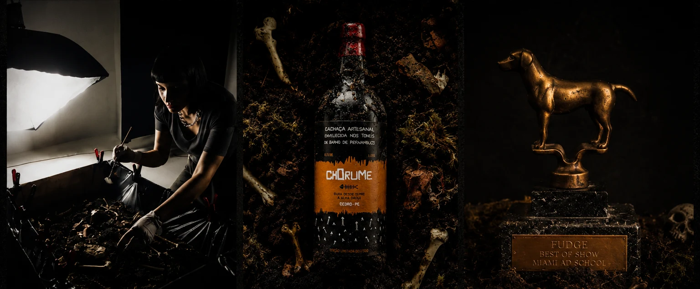
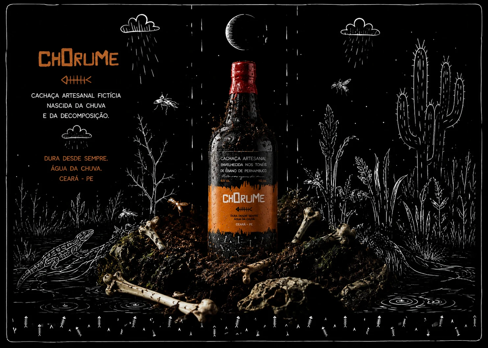
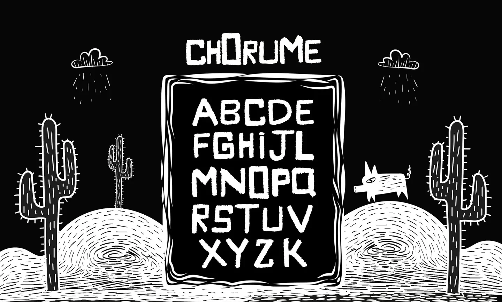
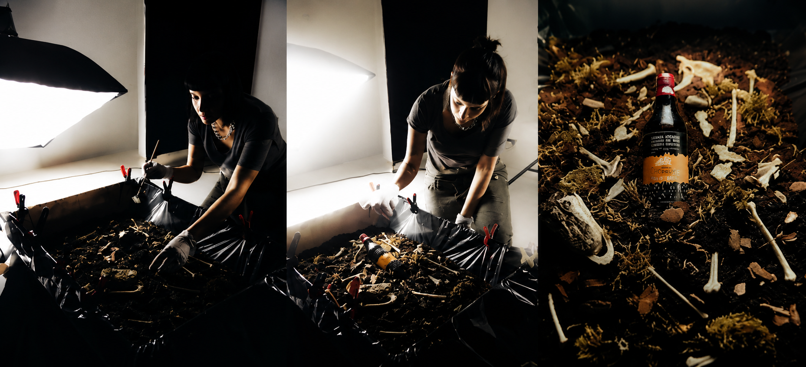
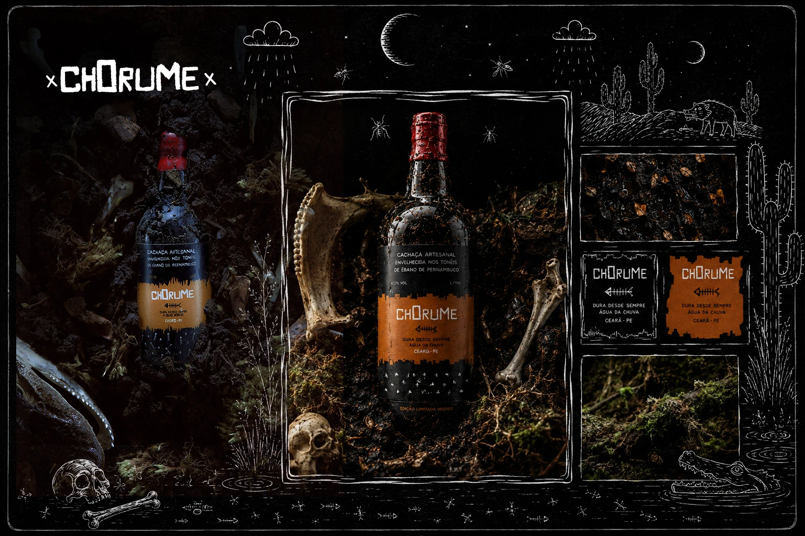
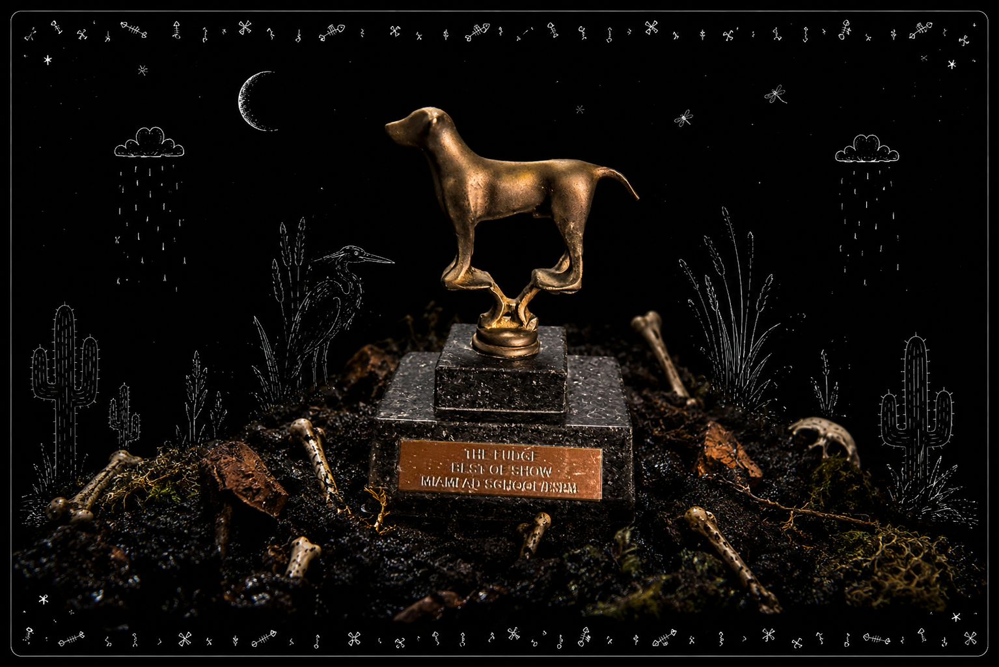

ChorumeTipografia
Projeto autoral de tipografia vernacular que virou ecossistema gráfico. De um cartaz de rua à criação de uma cachaça fictícia com identidade visual completa, envolvendo fonte desenhada à mão, direção de arte, cenografia e fotografia.


Tipografia
Vernacular
Chorume nasceu da observação de algo que normalmente passa despercebido: a forma como as pessoas desenham letras quando não estão tentando fazer design. Placas pintadas à mão, avisos improvisados, muros, fachadas e inscrições espalhadas pela cidade revelam soluções gráficas espontâneas.
O que me interessava não era reproduzir essa estética literalmente, mas entender o que tornava essas manifestações tão autênticas. Havia uma força visual difícil de ignorar.
A partir dessa pesquisa, desenvolvi uma marca fictícia de bebida artesanal que transformou referências vernaculares em uma linguagem visual própria, explorando tipografia, direção de arte, fotografia e narrativa de marca.
DIREÇÃO DE ARTE
Se a tipografia nasceu da rua, a direção de arte nasceu da terra.
A palavra Chorume evocava um imaginário específico: matéria orgânica em decomposição, solo úmido, vegetação tomando conta do que foi abandonado e o tempo agindo lentamente sobre tudo.
As referências reunidas para o projeto exploram exatamente essa tensão. Há algo de sombrio nessas paisagens, mas também algo profundamente vivo. Musgos, raízes, água corrente, troncos em decomposição e vestígios orgânicos compõem um ambiente onde decadência e renovação fazem parte do mesmo processo.
Esse repertório visual orientou toda a construção estética do projeto, servindo como base para a cenografia, a fotografia e a atmosfera da marca.
Da observação
ao sistema
Construção da linguagem
A partir das recorrências visuais observadas foi desenvolvida uma tipografia proprietária capaz de preservar o caráter vernacular observado durante a pesquisa sem abrir mão da consistência necessária para a construção de uma identidade visual completa.
A fonte tornou-se o elemento estrutural do projeto, servindo como base para todas as aplicações posteriores.

Bastidores do pântano,
camada por camada.
Se a tipografia nasceu observando a rua, o cenário nasceu colocando a mão na terra.

Estúdio, 2015. Foto: arquivo pessoal.
Em vez de descobrir algo enterrado, eu estava construindo aquele ambiente camada por camada. Sobre a montagem
O cenário foi montado manualmente em estúdio.
Terra, pedras, galhos, musgos e tudo o que pudesse
ajudar a construir a atmosfera que eu procurava.
Uma das histórias mais improváveis veio dos ossos. O irmão de uma amiga estudava medicina veterinária e colecionava esqueletos para estudo. Topou emprestar parte da coleção foi assim que jacarés, macacos e outros animais entraram na produção.
No final, a fotografia se tornou uma continuação da
própria
pesquisa. Se a tipografia nasceu observando a rua, o cenário
nasceu colocando a mão na terra.
Direção de arte
Para materializar essa narrativa obscura e viva, construí um pântano cenográfico em estúdio.
Aquário de vidro, terra úmida, musgo vivo, ossos reais (emprestados por um estudante de veterinária). A composição foi pensada como um relicário fúnebre da garrafa, como se tivesse sido desenterrada de um sítio arqueológico pós-apocalíptico. A iluminação reforça a sensação de profundidade e abandono.

Detalhe: garrafasob luz, rótulo em evidência, contexto sombrio.

Making-of: construção do pântano em estúdio, processo físico e sensorial.
Universo da marca
Toda a fotografia foi produzida para reforçar a
ambiguidade presente na marca.
A iluminação baixa, a paleta contida e os elementos orgânicos foram utilizados para criar imagens que transitam entre o editorial, o fantástico e o vernacular.
Mais do que registrar um produto, as imagens atuam como extensão da narrativa visual construída ao longo do projeto.

Olhar para o
que ninguém vê
No fim do projeto, Chorume foi reconhecido com o prêmio Best of Show da Miami Ad School.
Dez anos depois, continua na mesma estante.
Não como lembrança de uma conquista específica,
mas como um lembrete do processo que deu origem
a este projeto: observar aquilo que normalmente
passa despercebido, encontrar valor no improviso
e construir linguagem a partir de referências que
raramente ocupam o centro da atenção.
Chorume nasceu dessa forma de olhar.
E, de certa maneira, tudo o que veio depois também.
